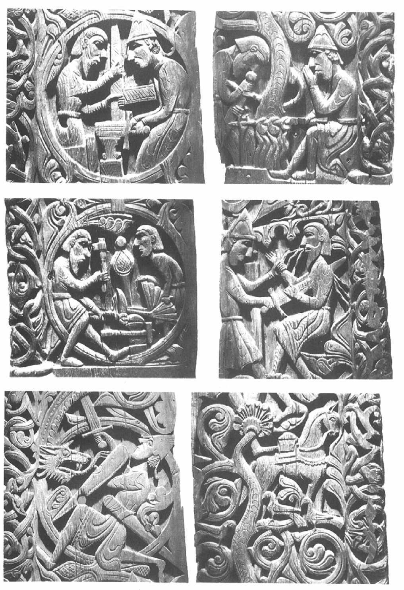
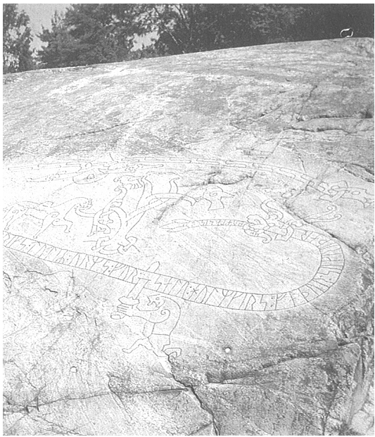
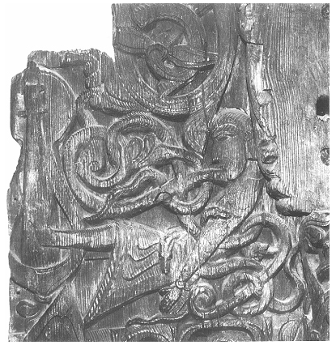

Tanrılar ve tanrıçalar hakkında buraya kadar ele almış olduğumuz mitler, onları bize insanoğlundan bir parça tecrit olmuş halde sunmaktaydılar. Söz konusu mitler, yalnızca tanrıları etkileyen olayları (Baldr mitinde olduğu gibi) ya da tanrılar ile -devler, iblisler, cüceler gibi- diğer doğaüstü yaratıklar arasındaki fırtınalı ilişkileri anlatmaktaydılar (tıpkı Idunn'un kaçırılışı öyküsünde olduğu gibi). Fakat örneğin, Odin savaşçı insanlarla ilgilenir ve onlara ihanet etmek yerine yardım ederdi. Kozmik yaratılış ve yıkım öykülerindeyse, tanrılar ile insanlar kaçınılmaz olarak ilişki halindedirler. Gelgelelim, diğer hususlar göz önünde bulundurulacak olursa, önceki sayfalarda irdelediğimiz mitlerde tanrılar ile insanlar arasında çok az ilişki kurulmaktaydı.
Bununla birlikte, Aesir tanrılarının insan bireylerinin kaderlerini nasıl etkileyebileceklerini çeşitli örnekler vasıtasıyla açıklayan ve Avrupa kültürü üzerindeki etkisi hâlen sürmekte olan bir mit vardır. Bu mit, tanrıların başından geçen bir macerayı kahraman krallar ve savaşçılar hakkındaki bir dizi efsaneyle ilişkilendirmektedir.[S.127] Bu durum, kitabın ilk bölümünde ortaya attığımız ama henüz yanıtlamadığımız bir soruya açıklık getirmektedir: Altın, mitlerde niçin "Susamurunun kan parası" olarak geçmektedir? Bu öykü, Codex Regius içerisinde yer alan, nesir girişi olan ve 'Regin'in Öyküsü' anlamına gelen Reginsmál adlı bir Edda şiirinde anlatılmaktadır. Snorri'nin Nesir Edda'sı da bu öyküyü anlatmaktadır. Ayrıca, bu öyküden, kahramanlıklarla bağlantılı olarak 'Volsungların Tarihi' anlamına gelen ve Ortaçağın sonlarından kalma bir İzlanda sagası olan Volsunga Saga dâhilinde söz edilmektedir.
Bu öykü, Hreimdar adındaki zengin bir çiftçiden söz ederek açılır. Hreimdar, büyücülük konusunda oldukça hünerli birisidir ve üç oğlu vardır. Oğullarının üçünün de kendilerine özgü yetenekleri vardır. Bunlardan Fafnir ile Otr, şekil değiştirebilme yeteneğine sahiplerdir. Regin ise bir cücedir ve bütün cüceler gibi o da hünerli bir zanaatçı, özellikle de çok iyi bir demirci ustasıdır. Codex Regius ondan "zeki, yırtıcı ve büyücülük konusunda fevkalade hünerli" diye söz etmektedir. Otr, azgın bir nehirde avladığı balıkları yiyerek hayatını sürdüren bir susamuruna (ki adının anlamı da budur) dönüşmek gibi tuhaf bir alışkanlığa sahiptir. Bu, onun felaketi olacaktır.
Günün birinde, Odin, Hoenir ve Loki uzun bir yolculuğa çıkarlar. Adet olduğu üzere Loki, onların başını yine belaya sokar. Ama bu kez fesatlığından değil, düşüncesizliğinden ötürü yapar bunu. Bir şelaleye gelirler ve nehrin kıyısında alabalık yiyen bir susamuru görürler. Volsunga Saga, her susamuru gibi onun da yemeğini gözleri kapalı halde yediğini anlatır (bunun gerçekten de bilimsel bir olgu olup olmadığını öğrenmek ilginç olabilir). Destan, bu durumu susamurunun yediği her lokmanın ardından yemeğinin biraz daha azaldığını görmeye dayanamıyor oluşuna bağlar. Her halükarda, susamuru tanrıların kendisine doğru gelmekte olduğunu görememiştir. Loki susamuruna bir taş atıp onu öldürür. Böylece, bir taşla hem samur postu hem de alabalık kazanmış olur.[S.128] Tanrılar, Hreimdar'ın evine varıp orada bir gece konaklamak için rica edene dek bunun ne kadar şanslı bir vuruş olduğunu düşünürler. Susamurunun postunu Hreimdar'a gösterip bir de bu yaptıklarıyla övünmeye kalkarlar. Çiftçi ve oğulları, talihsiz susamurunun öz kardeşleri olduğunu anlayıp ondan geriye kalanı tanrıların elinden alırlar ve tanrılardan derhal tazminat talep ederler. Aesir, postun içini altınla doldurup, üzerine de postu tamamen örtecek şekilde altın yığmaya kadar verirler. Gerekenleri temin etmesi için Loki'yi gönderirler.
Neyse ki Loki, Andvari adında bir cüce tanımaktadır. Cüceler usta zanaatkârlar olduklarından, etraflarında çokça altın vardır. Yine, bu cüce de biraz tuhaf bir simadır. Bir turna balığı kılığına girip yakınlardaki bir şelalede diğer balıkları avlayarak yaşamaktadır. Bu yüzden, Loki deniz tanrıçası Ran'dan bir balık ağı ödünç alır ve bu ağı kullanarak turnayı yakalar. Reginsmál şiiri ikisi arasında geçen konuşmayı aktarmaktadır. Loki şöyle sorar:
Ne biçim bir balıktır ki bu; akıntıda yüzdüğü halde,
Kendisini yine de koruyamamaktadır felaketten?
Hayatını ölüler ülkesinden kurtarmak için fidye ver
Ve bana çil çil altın bul.
Andvari'dir benim adım; Oin'dir babamın ki de,
Pek çok akıntıda yüzdüm.
Kadim zamanlarda kasvetli bir yazgı,
Buyurdu ki suda yüzmeliyim.
Loki, bunun üzerine fidye olarak Andvari'nin bütün altınlarını talep eder. Cüce, fidyeyi öder ama tek bir yüzüğü (aslında parmağa takılan bir yüzüğü değil, muhtemelen bir bileziği) kendine saklamaya çalışır. Bu yüzüğün, kaybettiği servetini telafi etmesine yardımcı olacak özellikleri vardır. Ama Loki, yüzüğü de[S.129] Andvari'den zorla alır. Cüce, kayaların içindeki güvenli evine dönmeden önce, bu hazineyi elinde tutacak olanları lanetler:
Gust'un bir zamanlar sahip olduğu o altınlar [sözcük
'yüzük' anlamına da gelebilir]
Sonu olacak iki kardeşin,
Çöküşü olacak sekiz prensin.
Servetim sevindirmeyecek hiçbir adamı.
Loki, fidye niyetine topladığı ganimeti getirir. Yüzükte gözü kalan Odin, onu kendisine saklar. Aesir, hazinenin geri kalanının susamuru postunun içini doldurmak ve üstünü de altınla örtmek için kullanır. Hreimdar, onların yaptıkları işi denetler ve üzeri örtülmemiş tek bir susamuru kılı tespit eder. Odin, gönülsüzce kendisine sakladığı yüzüğü çıkarır ve onunla kılın üstünü örter. Tanrılar Hreimdar'ın salonundan ayrılır ayrılmaz, Loki cücenin okuduğu laneti onlara açıklar:
Senin için şimdi altın, büyük fidyedir,
Yaşamına karşılık.
Oğulların için bir gelecek yok senin
Zira bu yaptığın her ikisine ölüm getirecek.
Aynen öyle olur. Fafnir ve Regin, kan parasından kendi paylarını isterler, fakat Hreimdar onlara tek kuruş dahi vermez. Bunun üzerin, Fafnir babasını öldürür, hazineyi alır ve kırlara götürüp oraya gömer. Ve Regin'in onu öldürmeyi başaracağı güne dek, bir ejderha kılığında lanetli hazinesini korur.
Shaw'ın 'perfect Wagnerite'i de ilerde bu öykünün kurucu öğelerinin bazılarını genel itibarıyla kullanacaktır: Altından bir hazine, bir cüceden kalleşlikle alınmış lanetli bir yüzük, altınla kaplanan bir beden ve işlemin tamamlanabilmesi için mutlaka yerine konması gereken bir yüzük.[S.130] Der Ring des Nibelungen, Das Rheingold'un önsözü ise, önceki bölümlerde ele almış olduğumuz mitleri yankılamaktadır: Daha sonraları iptal edilecek bir sözleşmeyle, devler tarafından tanrıları için inşa edilen bir duvar; gençlik elmalarını elinde bulunduran ve devler tarafından kaçırılması sonucu tanrıların yaşlanıp güçten düşmelerine sebep olan bir tanrıça. Wagner'in elindeki mitolojik malzemenin çoğunu İskandinav mitlerinden türetip kendi düşünsel amaçları doğrultusunda kullanmış olduğu aşikârdır. Yine de, Wagner'in müzikal dramı, büyük oranda, tanrılarla -özellikle de Odin (Wagner'in Wotan'ı) ile- kurduklar karanlık ilişkiler yüzünden felakete uğramış olan iki kahraman baba ve oğlu, Sigmund ve Siegfreid'ı anlatır.
Lanetli yüzük miti ile kahraman krallardan oluşan bir hanedanlık arasındaki bu bağlantıyı İskandinav geleneği de onaylamaktadır. Her ne kadar 'İskandinav geleneği' desem de, aslında bu öykülerin muhafaza edildiği kaynaklar özünde İskandinav olmaktan ziyade Orta Avrupalıdırlar. İskandinav yazarların kayıtlarında anlatılan efsanevi şahsiyetler arasında, özellikle belli tarihsel simalar kolayca ayırt edilebilmektedir. Gunnarr diye anılan kral, muhtemelen 5. yüzyılda yaşamış olan Burgonya hanedanı Gundaharius''tur. Buna karşın, alçak Atli, Hunların MS 451 yılında ölmüş olan acımasız lideri Attila'nın yansıması olsa gerektir. Iormunrekr, Ostrogotların 4. yüzyılda yaşamış olan kralı Ermanaric'i temsil ederken, Hialprekr ise Meroving hanedanlığından gelen ve 6. yüzyılda yaşamış olan Chilperic olabilir. Bu şahsiyetlerin İskandinav öykülerindeki sıraları, zamandizinine uymamaktadır.
İskandinav efsaneleri, Nazım Edda'da yer alan bir grup kahramanlık şiirinde anlatılmaktadır. Ben onları bir grup olarak görsem de, aslında tarihleri ve biçimleri bakımından geniş bir farklılık göstermektedirler. Kimisi muhtemelen Viking çağının ilk yıllarında, kimisi ise onikinci yüzyılda kaleme alınmıştır. Kimisi, karşılıklı konuşmalar vasıtasıyla yer yer kesilen öyküleyici[S.131] bir çerçevede kaleme alınmış yalın dizelerden oluşmaktadır. Diğerleri, aralara nesir tarzında anlatılar serpiştirilmiş olan öykü ve konuşma dizelerinden oluşmaktadır ve bu dizeler ile nesir tarzındaki parçalar arasındaki ilişki tartışmalara sebep olmuştur ve gerçekten de ihtilaflı bir konudur. Yine, kimi şiirler, geçmişte yaşanmış olayları anımsayan kişilerin ağzından ve bakış açısından birtakım öyküler anlatmaktadır. Fakat bütün bu farklılıklara rağmen, bu öyküler içerik ve konu bakımından birbirlerine oldukça benzemektedirler: Bu öykülerde anlatılan olaylar, genellikle, zalim yaradılışlı krallar tarafından sürdürülen ve gaddarlıkta onlardan aşağı kalmayan kadınlar tarafından adeta çanak tutulan, azılı kan davalarıdır. Bu krallar genellikle kibirli, para-göz, şan şöhret sevdalısı olan ve korkak görünmek istemeyen kişilerdir. Öykülerin genel havası ise, Hıristiyanlar tarafından seve seve onaylanacağı üzere, pagandır.
Snorri, bütün öykünün yalnızca bir kısmını Nesir Edda'sına almıştır. Öykünün tamamı için, MS 1400'lü yıllardan kalma eski bir elyazması içinde günümüze dek varlığını koruyabilmiş nesir tarzında bir çalışma olan Volsunga saga'ya bakmamız gerekmektedir. Volsunglar destanı, Edda şiirlerini ve bugün kayıp olan kaynaklardan devşirdiği malzemeleri süreklilik arz eden bir öykü oluşturacak şekilde birleştirip öyküyü yeniden kurar. Gel-gelelim, şiirler her zaman aynı öyküleri anlatmadıkları için, bu durum birtakım tutarsızlıklara yol açmaktadır. Buna ek olarak, ikincil nitelikteki kimi İskandinav kaynakları (Saxo Grammaticus dâhil), Ortaçağ Germen edebiyatından gelen -fakat kimileyin İskandinav kaynaklardan gelenlerden farklı olabilen- hatırı sayılır miktarda bilgi, hatta Anglosakson İngiltere'de bile bu efsanelerin bilindiğine delalet eden kısa göndermeler de vardır.
Öykünün İskandinav versiyonu, Odin'in soyundan geldiği düşünülen ve Macaristan'daki büyük bir hanedanlığın kurucusu olan Volsung adındaki bir kralla başlamaktadır.[S.132] Bu kralın on oğlu ve yalnızca bir kızı vardır fakat yalnızca bir oğlunun, Sigmundun ve onun ikiz kız kardeşi olan Signy'nin adı konmuştur. Volsung sert mizaçlı bir kral ve iyi bir savaşçıdır. Ortasında bir ağacın büyüdüğü görkemli salonunda ihtişam içinde yaşamaktadır. Günün birinde, kudretli bir kral olan Gautlandlı Siggeir (Götaland, İsveç) Signy'e talip olur ve nikâh töreni tertip edilir. Haliyle, görkemli bir düğün yaparlar. Herkesin ortada yakılan ateşin çevresinde otururmuş düğünün keyfini çıkardığı sırada, harmani giyen ve yüzü kukuleta ile örtülü, tek gözlü yaşlı bir yabancı çıkagelir. Kimse onu tanımasa da, bu adam Odin'den başka kim olabilir ki? Yanında taşıdığı kılıcı kınından çekip ağacın gövdesine saplar. Kılıcı ağacın gövdesinden çekip çıkarabilenin ona sahip olabileceğini ilan eder. Ardından çeker gider. Konukların hepsi kılıcı saplandığı ağaç gövdesinden çıkarmayı dener ama yalnızca Sigmund bunu başarır. Kılıcı incelediklerinde, onun o güne dek görmüş oldukları en güzel silah olduğuna karar verirler. Siggeir onu Sigmund'dan satın almak ister. Ama Sigmund bu teklifi reddeder ve bu yüzden iki aile arasına kara kedi girer (ağaca saplı kılıç motifi, elbette Wagner'in Die Walküre'sinde de yinelenmektedir).
Siggeir düğün şölenini kısa keser ve Signy'i de bütün itirazlarına rağmen yanına alarak evine döner. Gelgelelim Siggeir, Volsung ve oğullarına üç aylık süre zarfında Gautland'ı ziyaret etmeleri için davette bulunur. Volsung oraya gittiğinde, karşısında Siggeir'i ordusuyla savaşa hazır vaziyette bulur. Böylece, iki aile savaşır. Kahramanca direnmelerine rağmen, Volsung ve bütün adamları öldürülür, Yalnızca on oğlu tutsak olarak kurtulur.
Signy'nin önerisiyle, Volsung'un oğulları ormanın ortasındaki bir kütüğe zincirlenip terk edilirler. Her gece, bir dişi kurt ininden çıkagelir ve Volsung'un oğullarından birini yer. Geriye yalnızca Sigmund kalmıştır. Bu sırada, kardeşlerine yardım etme konusunda zaten çok geç kalmış olan Signy'nin aklına parlak bir fikir gelir.[S.133] Hizmetçisinin eline bir kavanoz bal tutuşturup Sigmund'u bulmasını ve balı onun yüzünün her yerine, hatta ağzının içine bile sürmesini emreder. Her gece olduğu gibi, kurt yine çıkagelir. Balı koklar ve Sigmund'un yüzünü yalamaya başlar. En sonunda, geriye kalan bala ulaşabilmek için, dilini onun ağzına sokmak zorunda kalır. Tam o anda, Sigmund kurdun dilini ısırır. Kurt, ayaklarını kütüğe dayayıp bastırarak, can havliyle geriye doğru sıçrar ve böylece kütük de parçalara ayrılmış olur. Sigmund onun dilini ısırdığı için, hayvanın dili kökünden kopmuştur. Kurt ölür.
Böylece, Sigmund serbest kalır ve kız kardeşi Signy onun korulukta saklanmasına göz yumar. İkisi, orada intikam planları yapmaya başlar. Signy, kardeşine yardım edip edemeyeceklerini görmek için, iki oğlunun Sigmund'un yanına yollar. Ama gençler başarısız olurlar ve bu nedenle Sigmund onları öldürür. Ama ne gariptir ki, Siggeir oğullarının ortadan kaybolduğunu fark etmez bile. Signy, yaptıkları intikam planının başarıya ulaşabilmesi için kardeşinden bileği kuvvetli sert bir oğul sahibi olması gerektiğine karar verir. Böylece, bir gece alımlı bir cadı kılığına girip kardeşini ziyaret eder ve onunla birlikte olur. Bu birleşmeden Sinfiolti adında bir oğlan çocuğu doğar. Sinfiolti'nin ne yaman bir savaşçı olacağı daha küçüklüğünden bellidir (bir kahramanın doğuşuyla sonuçlanan ensest ilişki, Die Walküre'de de vardır).
Böylece, baba oğul uzun bir savaş eğitimden geçerler. İntikam zamanı geldiğinde, giriş koridorunda saklanıp Siggeir'in salonuna ulaşırlar. Signy'nin hayatta kalan son iki çocuğu onların içeri sızmış olduklarını fark edince, Sinfiolti çocukları kılıcıyla oracıkta doğrar ve onlardan geri kalanı salonun ortasına atar. Pısırık Siggeir bile buna o kadar hiddetlenir ki, davetsiz misafirlerin derhal yakalanmaları ve huzuruna getirilmeleri emrini verir. Alışılageldik, yiğitçe bir çarpışmanın ardından, Sigmund ile Sinfiolti yaralı olarak ele geçirilirler.[S.134] Yaptıklarının bedelini ödeyip acılar içerisinde kıvranarak ölsünler diye, Siggeir ve adamları tarafından, çimlerle kaplı bir höyüğün içine canlı canlı gömülürler. Ama Signy, höyüğün üstü kapatılmadan önce içeri büyük bir parça et atmayı başarır. Sigmund ile Sinfiolti, kendilerine atılan et parçasını yakından incelediklerinde, etin eklem yerlerinden birine saplanmış halde bir kılıç bulurlar. Kılıcı tıpkı bir testere gibi kullanarak kendilerine bir yol açıp höyükten kaçmayı başarırlar ve geri dönüp Siggeir'in salonunu ateşe verirler ve onu canlı canlı yakarlar. Ama Signy de affedilemez birtakım davranışlar sergilemiş olduğuna kanaat getirmiş olacak ki, kocasını ölüme terk etmeyi reddeder ve onunla birlikte yanarak can verir.
Elimizde bu korkunç öyküyü bütünüyle anlatan, ilk elden herhangi bir kaynak yoktur. Yalnızca, iki hımsın hapsoldukları bir höyükten nasıl kaçtıklarını anlatan ve bu öykünün köklerine göndermede bulunmak amacıyla alıntılanmış olan bir dize varlığını koruyabilmiştir. Söz konusu dize şöyledir:
Güçlerini birleştirip koca bir dilim toprağı kestiler,
Tek kılıçla, Sigmund ve Sinfiolti.
Görünüşe göre, Volsunga saga'nın yazarı, başka birçok yerde yapmış olduğu gibi burada da, bildiği (fakat bize kadar ulaşamamış olan) bir şiiri vasat bir nesre çevirmiştir.
Sigmund ve oğlu/yeğeni, bu olaydan sonra bir gemiyle atalarının topraklarına geri dönerler. Sigmund orada Borghild adlı bir kadınla evlenip iki çocuk sahibi olur ve gücüne güç katar. Sigmund'un bu çocuklarından biri, ilerde ünlü Helgi olacaktır. Böylece, Volsung öyküsünün ilk bölümü sona erer.
Volsunga saga'nın ikinci bölümü ise Helgi ile amcası Sinfiolti'nin yaşadığı maceraları anlatmaktadır. Öykünün bu bölümü, kısmen, bir Edda şiiri olan ve kahramanımız hakkındaki ikinci sunumdan daha karmaşık mitolojik malzemeler devşirerek[S.135] takviye edebileceğimiz Helgi Hundling'in Katili'nin İlk Sunumu üzerine kuruludur. Genç bir adam olan Helgi, amcası Sinfiolti'yle birlikte uzun yolculuklara çıkıp çapulculuk yaparak yaşamaktadır. Derken, Helgi bir gün Hunding adlı bir kralı öldürür. Hunding'in oğulları, ondan yaptığına karşılık olarak belli bir miktar kan parası ödemesini talep ederler. Helgi kan parasını ödemeyi reddeder. Bunun üzerine, Hunding'in oğulları bir ordu toplayıp Helgi'ye savaş açarlar. Ama Hunding'in oğulları bu savaşta hezimete uğrarlar ve aralarından bazıları ölür. Helgi savaştan geri dönerken, yolda aralarında bir kralın kızı olan Sigrun'un da bulunduğu bir grup kadınla karşılaşır. Sigrun aslında bir valkriedir. Kız, kişiliksiz bir adam olan kral Hoddbrodd'a gelin olarak gönderildiğini söyleyip Helgi'ye veryansın eder. Helgi, kızı kötü kaderinden kurtarmaya gönüllü olur. Ordusunu Hoddbrodd'un ülkesinin sınırına kadar götürür. Sınırda onları ülkenin muhafızları karşılar. İki önderinin karşılıklı hakaret faslının ardından, ordular bir meydan savaşına tutuşurlar. Helgi, Sigrun'un valkrielerinin de yardımıyla kralı öldürmeyi başarır. Böylece, Sigrun'a tutulan Helgi zamanla uslanır. İkinci sunum, Helgi'nin bir intikamcının elinden olan ölümünü anlatsa da, Volsunga saga'da bir daha onun adı anılmamaktadır.
Sinfiolti ise korsanlık yapmayı sürdürür. Günün birinde, Borghild'in kardeşinin de kur yaptığı çekici bir kadınla tanışır. Sinfiolti, bir yolunu bulup rakibini alt eder. Evine geri döndüğünde Borghild onu hiç hoş karşılamaz. Sinfiolti buna çok şaşırır ve istenmediği yerde kalmayacağını belirtir. Ama Sigmund, Sinfiolti'ye kalması için ısrar eder. Derken, Borghild kardeşi için bir ölü bekleme töreni düzenler ve görkemli bir ziyafet verir. Adet olduğu üzere, içki servisi yapar ve likör dolu bir boynuzu Sinfiolti'ye ikram eder. Sinfiolti, likörün biraz bulanık olduğunu düşünür ve onu içmez. İçkiyi onun yerine Sigmund içer ve ona hiçbir şey olmaz. Sinfiolti, Sigmund'un zehirden etkilenmediğini bilmemektedir.[S.136] Borghild, ikinci defa içki servisi yapar. Sinfiolti "içkiye bir şeyler karıştırılmış" diyerek içkiyi içmeyi reddeder. Bunun üzerine, içkiyi yine Sigmund içer. Borghild, üçüncü kez şansını denemeye karar verir. Sinfiolti bu kez de "bu içkiye zehir katılmış" der. Ama Sigmund içtiği içkiler yüzünden sarhoş olmuştur ve artık doğru kararlar verebilecek halde değildir. Bu yüzden, sarhoş kafayla "o halde onu bıyığınla süzüp iç" diye bir tavsiyede bulunur. Sinfiolti de öyle yapar ve düşüp ölür. Sigmund'un dünyası başına yıkılır. Morali bozuk ve kederli bir halde, oğlunun cenazesini, fiyordun kıyısında yaşayan ve her seferinde yalnızca tek yolcuk alabilen küçük bir kayığı olan adama (bu adam da Odin olabilir mi acaba?) götürür. Sigmund, cenazeyi kayığa bindirir ve fiyort çevresinde yürümeye hazırlanır. Ama tam bu sırada kayık birden bire gözden kaybolur. Sigmund öfkeyle evine döner ve intikamcı kraliçesini evinden kovar ve Borghild kısa bir süre sonra ölür.
Sigmund bu ilk evliliğinin ardından, başka bir kralın kızı olan Hiordis ile evlenir. Bu kez rakibi, Hunding'in oğullarından biri olan Lyngvi'dir. Lyngvi kızı elinden kaçıracağını anlayınca, bu kadarı da fazla artık diye düşünür ve bir engel olarak gördüğü Sigmund'u ortadan kaldırmaya karar verir. Macaristan'ı istila edip savaş açar. Savaş çetin geçer, zira Sigmund artık ihtiyarlamış olmasına rağmen kendisini kahramanca savunmaktadır. Savaşın orta yerinde, uzun kukuletalı siyah bir harmani giyen ve elinde bir mızrak taşıyan tek gözlü meçhul bir adam çıkagelir (Odin!). Bu adam mızrağını havaya kaldırıp Sigmund'un yoluna çıkar. Sigmund'un kılıcı, meçhul adamın mızrağına çarpınca parçalara ayrılır ve işte tam bu noktada savaşın kaderi değişir. Sigmund ölümcül bir yara alır (benzer bir olay Die Walküre'de anlatılmaktadır).
Bunun üzerine, o ana dek bütün kraliyet hazinesiyle birlikte ormandaki güvenli bir yere saklanmış olan hamile Hiordis, geri döner ve kocasını diğer yaralıların arasında can çekişir halde bulur.[S.137] Sigmund, son nefesini vermeden önce, doğacak çocuğunun ne kadar büyük bir şahsiyet olacağı hakkında bir kehanette bulunur ve karısı Hiordis'e kılıcından geriye kalan parçaları doğacak çocuğunun iyiliği için saklamasını vasiyet eder. Hiordis, Danimarka kralının oğlunun önderlik ettiği oradan geçmekte olan bir grup Viking tarafından koruma altına alınır.
Volsunga saga'nın üçüncü bölümü, Hiordis'in Sigmund'dan olma oğlunun serüvenlerini anlatmaktadır. Bu çocuk, en büyük Germen kahramanlardan biri olan Sigurd (Wagner'in Siegfreid'i) olacaktır. Volsung hanedanları hakkındaki kahramanlık destanı ile altından oluşan ve ölümcül yüzüğü barındıran büyük bir hazine hakkındaki tanrı miti arasındaki bağlantı noktası burasıdır. Sigurd, Danimarka kralının sarayında en iyi şekilde yetiştirilmiştir ve akıl hocası demirci Regin'dir. Regin, babasını öldürüp altınlarını çalan ve ejderha kılığına girip çaldığı altınların başında nöbet beklemekte olan Fafnir'in muhalif kardeşidir. Regin, Sigurd'a bir veliahda yakışan tüm meziyetleri kazandırır ama bir yandan da onu başkasının eline bakan halinden kurtulması için sürekli kışkırtır. "Sigurd'un kraliyet mirasını kim korumaktadır?" "Danimarka kralı ve onun oğlu". "Fakat Sigurd bu mirası onlara kendisi mi emanet etti?" "Peki onlar Sigurd'a yeterince cömert davrandılar mı?" "O halde, niçin kendi altınları üzerinde bile söz sahibi olamıyor?"
Sigurd, bu soruları, istediği takdirde hamisinin kendisine derhal bir at -ya da herhangi bir şeyi- vereceğini söyleyerek yanıtlar. Ne de olsa, kral onu harasından istediği atı seçebilsin diye özgür bırakmıştır. Sigmund, en iyi atı kendisi için seçmeye gittiğinde, o güne dek tanımadığı sakallı ve yaşlı bir yabancıyla tanışır. Bu adamın tek gözü olduğu rivayet edilmektedir. Dolayısıyla, bu simanın kılık değiştirmiş Odin olduğu besbellidir. Yabancı, Sigurd'a bir atı nasıl seçmesi gerektiği konusunda öğütler verir. İkisi, Sleipnir'in soyundan gelen[S.138] (ve bu yüzden, fevkalade nitelikleri olması gereken) bir at seçerler ve ona Grani adını verirler.
Daha sonra, Regin hazine ele geçirebilecekleri bir yer bildiğini söyleyip Sigurd'un aklına para hırsını sokar. Ona, bu hazineyi Fafnir adındaki bir ejderhanın korumakta olduğunu söyler. Ejderhanın ini yakınlardaki bir ormandadır. Ama Sigurd'un bu canavarı öldürebilmesi için bir kılıca ihtiyacı olacaktır. Demirci ustası Regin, delikanlıya hemen bir kılıç yapar. Sigurd kılıcı örse vurduğunda, kılıç kırılır. Regin bu kez daha iyi bir kılıç yapar. Ama yine aynı şey olur. Bunun üzerine Sigurd, babasından yadigâr kalan kılıcın parçalarını annesinden ister. Regin, ustaca dengelenmiş madenlerden imal edildiği besbelli olan bu kılıç parçalarını kullanıp örsü bir vuruşta ortadan ikiye ayırabilecek sertlikte ve ırmakta yüzmekte olan bir yün ipliğini dahi kolayca ortadan ikiye ayırabilecek keskinlikte bir kılıç yapar. Sigurd, kılıcın kendisine verdiği güvenle, ejderhanın peşine düşmeden önce babasının katillerinden intikam alır. Fafnir'le karşılaşmaya artık hazırdır.
Sigurd ile Regin, Fafnir'in saklandığı ormana doğru yola koyulurlar. Ejderhanın su içmeye giderken yerde bıraktığı izleri takip ederler. Bu izler o kadar büyüktür ki, Sigurd bir an için endişeye kapılır. Regin ona ejderhanın bıraktığı izler boyunca bir çukur kazmasını öğütler. Böylece ejderha sürünerek suya geldiğinde bu çukurun içine düşebilecek ve önceden çukurun içine saklanmış olan Sigurd, bu sayede kılıcını hayvanın yumuşak karnına saplayabilecektir. Sigurd hiç vakit kaybetmeden bu tuzağı hazırlamaya başlar ama bu sırada çıkagelen yaşlı bir adam (acaba kim olabilir dersiniz?), ona eğer ejderhanın akan kanından zarar görmek istemiyorsa bir sıra çukur kazmasını tavsiye eder. Sigurd bu tavsiyeyi dikkate alır ve kurduğu tuzak sayesinde Fafnir'i öldürmeyi başarır. Bir Edda şiiri olan ve 'Fafnir'in Öyküsü' anlamına gelen Fáfnismál, Fafnir ve katili arasında geçen konuşmaları aktarmaktadır.[S.139] Bu konuşmalar, hazinenin delikanlıya getireceği kötü yazgı konusunda birtakım uyarılar da içermektedir:
Şıkırdayan altınlar ve parlak kızıl hazineler,
Yüzükler sana ölüm getirecekler.
Ama Sigurd hiç istifinin bozmaz:
Her insan bir gün,
Boyun eğmelidir ölüme.
Canavar son nefesini verdiğinde, Regin gelip onun kalbini çıkarır ve kanından biraz içer. Sigurd'dan, ejderhanın kalbini onun için kızartmasını rica eder. Sigurd, kalbi bir şişe geçirip ateşe tutar. Kalbin içersindeki sıvı köpürmeye başladığında, eti ateşten alır ve parmağıyla ona dokunup pişip pişmediğine bakar. Ama et çok sıcaktır ve parmağını yakar. Sigurd parmağını soğutmak için ağzına götürür. Fafnir'in kanı diline değdiği anda, kuşların dillerini artık anlayabildiğini fark eder. Altında durdukları ağacın üzerine sürü halinde sıvacı kuşları tünemiştir ve birlikte cıvıldamaktadırlar. Kuşlardan biri şöyle der:
Orada, üzerine kan bulaşmış halde oturuyor Sigurd.
Pişiriyor ateşte, Fafnir'in kalbini.
O yüzük dağıtıcısı [veliaht] bana gözüme daha akıllı görünecekti
Eğer ki kendisi yemiş olsaydı pulları parlayan yılanın kalbini.
Derken, diğer kuşlarda onlara katılırlar ve hep beraber demirci Regin'in delikanlıyı arkasından vurmaya niyetliği olduğunu söylerler. Sigurd'a demircinin kellesini uçurup bütün hazineyi kendisine saklamasını ve Maral Çayırı denen yerde büyülü bir uykuya yatmış olan Brynhild adlı valkrieyi bulup, ondan bilgelik öğrenmesini öğütlerler. Sigurd bu öğüde kulak verir ve kılıcını çektiği gibi Regin'in kellesini uçurur.[S.140] Ejderhanın kalbinin birazını yer ve geri kalanını da gelecekte kullanmak üzere saklar. Atı Grani'ye atlayıp Fafnir'in bıraktığı izleri onun inine kadar takip eder. Orada iki ya da üç sıradan atın taşıyabileceğinden çok daha fazla hazine bulur. Buna rağmen, tüm hazineyi Grani'nin sırtına yüklemeyi başarır ve oradan uzaklaşır.
Sigurd'un şimdiye dek gayet basit olan işlerinin birdenbire arapsaçına döndüğü nokta işte burasıdır, zira bu kez iradeleri son derece güçlü iki kadınla uğraşmak zorunda kalacaktır. Bu kadınlardan biri valkrie Brynhild'dir; diğeriyse müstakbel karısı Gudrun'dur. Bu noktada, gelenekte de bir karışıklık var gibi görünmektedir: Farklı kaynaklardan hareketle yalın bir öyküyü yeniden oluşturmak hiç de kolay bir iş değildir. Volsunga saga, Sigurd'un Maral Çayırı'na nasıl vardığını ve uzakta yanan bir ateş gördüğünü anlatmaktadır. Ateşin kaynağına doğru gittiğinde, bunun aslında etrafı alevlerle sarılmış bir kale olduğunu görür. İçerde, zırh giymiş birisi derin bir uyku halinde yatmaktadır. Sigurd, madenleri bile bez keser gibi kesebilen kılıcını kullanıp zırhı derhal keser ve bu zırhın ardında yatan kişinin bir kadın olduğunu görür. Bu kadın, itaatsizliği yüzünden Odin tarafından uyumaya mahkûm edilmiş olan valkrie Brynhild'dir. Sigurd hemen kadını uyandırır ve onun güzelliği ile zekâsı karşısında büyülenir. Birbirlerine âşık olup sadakat yemini ederler.
Öykünün bundan sonraki kısmında bir karışıklık söz konusudur. Sigurd atına atlayıp oradan ayrılır (ama neden?) ve Brynhild'in, heybetli görüntüsü insanı heyecanlandıran babalığı Heimir'in evine gelir. Brynhild, babalığının yanında kalmaktadır (oraya nasıl gitti acaba?) ve Sigurd yine ona olan aşkını ilan eder. Ama Brynhild bu kez o kadar istekli değildir, zira savaş kuvvetlerini yöneten bir valkriedir ve halinden gayet memnundur. Sigurd'un yazgısı Gudrun'la evlenmektir ama o başta bunu şiddetle reddeder ve Brynhild'e tekrar bağlılık yeminleri edip ona bir altın yüzük verir. Bu yüzük, aslında lanetli altın yüzüğün ta kendisidir.[S.141]

Bu Sigurd oymalarının hepsi Norveç, Oslo'daki Hylestad Kilisesi'nin girişinde bulunmaktadır. Sol üstte: Sağdaki figür, Sigurd, kılıcının tahrip gücünü test ediyor. Regin karşısında onu seyretmektedir. Sol ortada: Regin ve yardımcısı, Sigmund'un bıçağının kırık parçalarından oluşan bir başka yeni kılıcı dövüyor. Sol altta: Sigurd ejderha'nın karnını deşiyor. Sağ üstte: Sigurd, Fafnir'in kalbini kızartıp, yemeye hazır olup olmadığını kontrol ederken, Regin uyuyor. Kanı tattığında, üzerindeki ağaçlarda tünemiş kuşların dilini anlamaya başlıyor. Sağ ortada: Sigurd, kuşun öğüdüne uyarak Regin'i öldürüyor. Sağ altta: Sigurd, ejderha Fafnir'den elde ettiği hazineleri atı Grani'ye yüklüyor.[S.142]

Üzerinde yılana benzeyen bir şekil bulunan runik anma taşı.
Oymacı, yılanı Fafnir olarak ve Sigurd'u da aşağısında,
ejderhanın karnını deşerken göstermiştir.
Böylece, Ren nehrinin güneyine, Giuki'ni sarayına giderler. Giuki'nin Grimhild adlı cadı bir karısı, Gunnar, Hogni ve Guttorm adlarında üç oğlu ve Gudrun adında bir kızı vardır. Brynhild, Gudrun'un arkadaşıdır ve ikisi gelecek hakkında sohbet etmeye başlarlar. Brynhild, Gudrun'un rüyalarını yorumlayıp[S.143] uğrayacağı kötü yazgıyı ona önceden bildirir: Gudrun Sigurd ile evlenecek ama bir süre sonra onu kaybedecektir.
Sigurd bütün hazinesini alıp Giuki'nin salonuna getirir. Giuki onu içeri davet eder. Grimhild, ailesi için Sigurd'un büyük yararları dokunabileceğini hemen anlar. Ama bunun olabilmesi için Sigurd'un Brynhild ile aşk yaşamaması gerekmektedir. Grimhild bu sorunu, Sigurd'a eski aşkını unutmasını sağlayacak büyülü bir içki içirerek çözer. Giuki, Sigurd'un desteğini yitirmemek için kızı Gudrun'u ona gelin olarak verir. Sigurd mutluluktan havalara uçar. Brynhild'i artık unutmuştur. Görkemli bir düğün yapıp evlenirler ve bu birlikteliği pekiştirmek için Gunnar, Hogni ve Sigurd kan kardeşi olurlar. Ardından, ailenin erkekleri hep birlikte korsanlık yapmaya giderler ve birçok ganimetle geri dönerler.
Bu sırada Gunnar da bir yolunu bulup evlenebilmek için can atmaktadır. Brynhild'e kur yapmaya karar verir ve konuyu Sigurd'a açar. Sigurd ona yardımcı olmayı kabul eder. Brynhild, yalnızca atını sürüp salonunun etrafını saran alevlerin arasından geçebilecek cesarete sahip olan bir adamla evlenebileceğini ona bildirir. Gunnar buna yeltenir, fakat atı ürker ve alevlerin içinden geçmeyi reddeder. Bunun üzerine, Sigurd'dan Grani'yi ödünç alır ama Grani, üzerinde Gunnar varken adım dahi atmaz. Sigurd ile Gunnar birbirlerinin kılığına girmeye karar verirler (acaba nasıl?). Grani üzerinde Sigurd olduğu halde alevlerin ortasına atılır. Brynhild, üzerinde zırhı ve miğferi olduğu halde salonunun ortasında haşmetli bir şekilde oturmaktadır. Sigurd/Gunnar, alevlerin içinden geçtiğini ve ona sahip olmaya hak kazandığını ilan eder. Brynhild, onu evine ve yatağına kabul eder. Sigurd/Gunnar, kılıcını çeker ve yatarlarken aralarında bir engel oluşturacak şekilde yatağın ortasına koyar. Sonra büyük altın yüzüğü alıp yerine başka bir yüzük koyar. Bunun ardından, atına atlayıp alevlerin arasından geçerek salondan çıkar. İki arkadaş, kılıklarını tekrar eski haline getirirler.[S.144] Brynhild ile Gunnar için büyük bir düğün şöleni tertip edilir. Sigurd birden Brynhild ile nasıl tanıştığını ve ona nasıl âşık olduğunu anımsar ama artık iş işten geçmiştir. Bu yüzden, durumu kimseye belli etmez.
Neden sonra, Gudrun ile Brynhild kimin kocasının daha üstün olduğu konusunda tartışmaya başlarlar. Brynhild, kocasının kendisi uğruna ateş duvarından geçtiğini söyler ve kendi kocasının daha üstün olduğunu ileri sürer. Gudrun ise ateş duvarını aşanın aslında Gunnar kılığına girmiş Sigurd olduğu söyler ve kendisinin bunu kanıtlayacak büyük yüzüğe sahip olduğunu belirtir. Böylece iki arkadaşın foyası ortaya çıkmış olur. Brynhild öfkeden deliye döner. Hem kendisini utandırmış olan Sigurd ile Gudrun'dan hem de hileyle ona sahip olmuş olan kocası Gunnar'dan intikam almayı tasarlar. Sigurd'un yumuşak yanıtları bile onun öfkesini dindirmeye yeterli olmaz.
Brynhild, kocasıyla konuşur ve aynı çatı altında Sigurd kadar ünlü bir savaşçıyı barındırmanın getireceği tehlikeye karşı onu uyarır:
Gideceğim eskiden yaşadığım yere,
Babam ve akrabalarımla birlikte olmaya.
Hayatımın geri kalanını orada oturup uyuyarak geçireceğim.
Ta ki sen Sigurd'un öldüğünden emin olana dek,
Ta ki sen herkesten büyük bir prens olana dek.
Gunnar artık son derece hassas bir konumdadır. Bir yandan, kan kardeşi olmasından ötürü Sigurd'a zarar verememektedir. Ama diğer yandan, Sigurd'un hazinesini ele geçirme fikri aklını çelmektedir. Bu iş için Hogni'yi kullanamayacağını da bilmektedir, zira verdiği birliktelik yeminden ötürü onun da Sigurd'a karşı eli kolu bağlıdır. Derken, Gunnar'ın aklına parlak bir fikir gelir. Cinayeti küçük kardeşleri Guttorm'un işlememesi için hiçbir sebep yoktur. Öyle ya, ne de olsa Guttorm birliktelik yeminine katılmamıştır.[S.145] Böylece iki ağabey, para ve güç teklif ederek, Sigurd'u öldürmesi için kardeşlerini teşvik ederler. Hatta bunun için ona büyülü yiyecekler bile verirler (açıkçası, bu kulağa fazlasıyla yavan gelmektedir). Nihayet, anneleri cadı Grimhild'i devreye sokarlar. Grimhild'in kendine özgü ikna çabaları meyvesini verir ve Guttorm cinayeti işlemeye razı olur.
Sigurd, hiçbir şeyden kuşkulanmadan yatağında uzanmaktadır. Guttorm onun odasına iki kez girer ve her seferinde, onu uyanık halde bulur. Sigurd'un bakışları öylesine korkutucudur ki, eli ayağına dolaşan Guttorm telaş içinde odadan kaçmak zorunda kalır. Ama üçüncü kez odaya girdiğinde Sigurd artık uyumuştur. Böylece, Guttorm hiç vakit kaybetmeden kılıcını ona saplar. Sigurd aldığı darbenin etkisiyle uyanır. Bunu gören Guttorm, odadan kaçmaya çalışır. Sigurd kılıcını kapar ve kaçmaya çalışan Guttorm'a fırlatır. Guttorm tam kapının eşiğine geldiğinde Sigurd'un fırlattığı kılıç onu belinden ikiye böler. Böylece, bedeninin bir yarısı odanın içine, diğer yarısı ise odanın dışına düşer. Sigurd'un kollarında uyumakta olan Gudrun, yaşanan arbede neticesinde uyanmak zorunda kalır, odanın kan gölüne döndüğünü görür ve büyük bir kedere kapılır. Sigurd son nefesini vermeden önce bu olaydan Brynhild'i sorumlu tutar ama bir yandan da kendisinin bu yazgıya çok önceden mahkûm edilmiş olduğunu bilir. Brynhild, Gudrun'un feryatlarını duyunca keyiften kahkahalar atar. Sonra kocası Gunnar'a bu olayın nelere mal olacağını açıklar: Bundan böyle, kardeşler savaşa gittiklerinde Sigurd'un desteğinden yoksun olacaklardır. Sigurd'un cenaze töreni hazırlanırken, Brynhild kendini bıçaklar ve son isteğinin Sigurd'la birlikte aynı odunlar üzerinde ve yine kınından çekilmiş kılıç aralarında olacak şekilde yakılmak olduğunu söyler. Büyük kahramanın tehlikeler, şanlı zaferler ve ihanetlerle dolu hayatı böylece son bulur (Wagner severler bu olayların Siegfreid ve Götterdämmerung'da anlatılanların neredeyse aynısı olduğunu hemen fark edeceklerdir).[S.146]
Volsunga saga'nın son bölümü ise Gudrun'un, kocasının ölümünden sonra karşı karşıya kaldığı korkunç yazgıyı anlatmaktadır. Gudrun, uzun bir süre kıraç topraklarda gizlenir ve daha sonra Danimarka'da sürgün hayatı yaşamaya başlar. Kardeşleri onu Danimarka'da bulurlar ve çektiği acılar için ona tazminat ödeyip hatalarını affettirmek isterler. Grimhild, kızı Gudrun'a yaptığı hataları unutturacak büyülü bir içki hazırlar. Fakat sonra, biraz şaibeli bir davranış sergileyip onu kendi rızası olmadan Atli ile nişanlar. Atli, kardeşlerin Sigurd'u öldürüp ele geçirdikleri hazineye göz diker. Onlara bir oyun etmeye karar verir ve kardeşleri evine davet eder. Gudrun, kardeşlerini Atli'nin kumpasına karşı uyarmaya çalışsa da başarısız olur. Atli, onları kendi krallığının vârisleri tayin edeceği vaadiyle kandırmıştır. Kardeşler Atli'nin ülkesine ayak bastıklarında oyuna getirildiklerini anlarlar ama Gunnar ve Hogni yollarından dönmeyip atlarını cesurca Atli'nin sarayına doğru sürmeye devam ederler. Saraya vardıklarında, Atli'nin ordusuyla meydan muharebesi yapmaya başlarlar. Gudrun, kardeşlerinin zor durumda olduğunu görür ve kılıcını kuşanıp onların yanında savaşa katılır. Korkunç bir katliam yaşanır. Savaşın sonunda Gunnar ve Hogni esir alınıp zincire vurulurlar.
Gunnar'a bir teklif götürülür. Eğer hazinenin nerede saklı olduğunu söylerse hayatı bağışlanacaktır. Bunun üzerin Gunnar "Önce kardeşim Hogni'nin kalbinin vücudundan söküp bana gösterin" der. Fakat Atli'nin adamları, korkak bir kölenin kalbini söküp ona Hogni'nin kalbi diye gösterirler. Gunnar, bu kalbin kardeşine ait olduğuna inanmaz, zira Hogni'nin kalbinin asla yapmayacağı şekilde, dehşet içinde atmaktadır. Bunun üzerine, adamlar Hogni'yi gerçekten de öldürüp kalbini sökerler. Ama Hogni, kalbi sökülürken garip bir şekilde kahkahalar atmaktadır. Nihayet kardeşinin kalbini Gunnar'a götürürler. Bu kalbin kardeşine ait olduğunu anlayan Gunnar "Altınların nerede olduğunu artık yalnızca ben biliyorum. Hogni size hiçbir şey anlatamaz.[S.147] Her ikimiz de hayattayken aklımda bir şüphe vardı ama artık hepsi geçti. Kararı yalnız başıma ben vereceğim. O altınlara Hunlardan önce Ren sahip olacak" der.
Bunun üzerine Atli, Gunnar'ı zehirli yılanlarla dolu bir çukura atar. Gunnar'ın elleri bağlıdır fakat Gudrun çukura bir arp atar. Gunnar arpı ayak parmaklarıyla çalıp yılanları büyüler. Ama bu fazla uzun sürmez ve bir engerek yılanı onu sokup öldürür

Gunnar, bir yılan deliğinde bağlanmış yatmakta ve yılanlara büyü yapmaya
çalışmaktadır. Bu, az da olsa işine yarar.
Yine, Norveç, Oslo'daki Hylestad Kilisesinden.[S.148]
Artık hem Atli'nin hem de Gudrun'un yaslarını tutacakları dostları vardır. Böylece, barış içinde ortak bir ölü bekleme şöleni düzenlerler; ya da en azından Atli barış yaptıklarını düşünmüştür. Gudrun, şölen sofrasına Atli'den olma oğullarının kalplerini getirir ve onların kanlarını şölen şarabına karıştırıp kafatasla-rından içki bardakları yapar. Atli ne olduğunu bile anlayamadan Gudrun ve Hogni'nin oğullarından biri onu bıçaklarlar. Ardından salonu içindekilerle birlikte ateşe verirler. Ejderha kalbi yemenin bir kadının içindeki canavarı uyandırabileceğine hiç kuşku yoktur.
Yine de Gudrun'un çilesi henüz bitmiş değildir. Güzeller güzeli kızı Svanhild, kendisinden yaşça büyük bir kral olan Iormunrek ile nişanlanır. Kral onun sadakatinden şüphe duyar ve onu atının ayakları altında çiğneyip öldürür. Gudrun'un sağ oğulları, kardeşlerinin intikamını almak için Iormunrek'i yakalayıp kendi sarayına götürürler ve orada onun kolları ile bacaklarını keserler. Ama Iormunrek ölmeden önce adamlarına saldırganları taşlayarak öldürmeleri emrini vermeyi başarır. Böylece, Gudrun'un oğulları da ölür. Snorri'ye bakılacak olursa, Fafnir'in mirası olan lanetli altın, hâlen Ren nehrinin derinliklerinde yatmaktadır. "Ve o günden beri bulunamamıştır."[S.149]